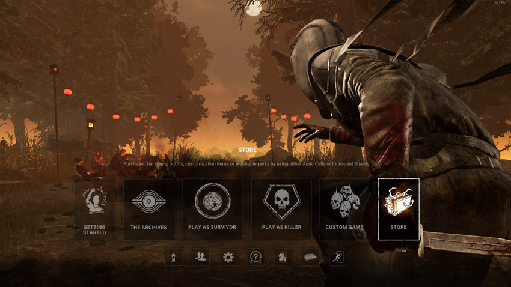

Начало
НачалоDead by Daylight
В обувките на убиеца
Dead by Daylight – asymmetrical, hack and slash, horror, multiplayer (4v1),
излязла юни 2016-та за PC, юни 2017-та за XBOX и PS4 и по-късно за други платформи. Публикувана от Behaviour
Interactive Inc. - известни с партньорския си принос към други компании в изготвянето на игри като: Rainbow
Six, Call of Duty: Vanguard, Borderlands: The Pre-Sequel и др.

Първият път, като чух за играта, беше, като излезе безплатна в Epic Games launcher-a, значи началото на
декември месец 2021. След кратко преглеждане на картинките, краткото описание и добрите отзиви на 2-3ма
приятеля, знаех, че ще е игра само да се съберат група приятели и да се забавляват. Не ми изглеждаше като
типичните tryhard игри от днешно време. И горе долу се оказа така.
Gameplay
Геймплейът се разделя на 2 части – убиец и оцеляващ. Убиецът трябва да убие
оцеляващите, преди те да избягат от него, като работят заедно в оправянето на 5 генератора, подхранващи 2
врати на картата, от които се бяга.

Оцеляващите могат да използват терена на картата
(палети, прозорци, т.н.) за избягване, примамване и stun-ване на убиеца, като за сметка на това те бягат
по-бавно от него. На тях също им е позволено да използват 1 от 5 основни item-а (фенер, куфар с инструменти,
аптечка, карта и ключ), като ако не са си взели от началото на играта, могат да вземат от randomly разпръснати
малки сандъчета по картата. По време на оправянето на генераторите могат да излязат skill-checks, които са
като малки minigame-ове за рефлекси. Ако не се изпълнят правилно, прогресът на генератора намалява с няколко
процента и самия той гърми, привличайки обикновено вниманието на убиеца (90% от случаите аз съм виновен с
тва). След поправяне на 5-те генератора, вратите за избягване биват подхранени и когато се отворят след
дърпане на ръчката до тях, оцеляващите могат да избягат успешно.

Убиецът, освен с оръжието с което е екипиран, идва с една или две умения, като - хвърляне на ножовки,
разцепване на земята, невидимост, телепортация и др., като всяка от тях идва с недостатък – забавяне на
бягането ви, изморяване, зашеметяване и др. Те също могат да манипулират терена, като - чупят пуснатите от
оцеляващите палети, чупят специфични врати, прескачат прозорци и прочие, но това ги кара да се забавят, докато
гонят плячката си.

Самото убиване на оцеляващ става, като той бива ударен 2 пъти и повален на земята. Убиецът
взима тялото и го закача на някоя от разпръснатите куки из картата, като те могат да се откачат от тях
(по-рисковано) или да изчакат някой от останалите да им помогне. Оцеляващият бива убит след 3-ти път закачане
или докато не им изтече времето, докато са закачени на куката.

Още един начин на избягване за оцеляващите е чрез шахта, която се появява randomly на картата, когато остане
само един човек. Ако тя бъде намерена от убиеца преди него, той може да я затвори и автоматично да подхрани
вратите, ако не са вече подхранени, давайки на оцеляващия още един остатък шанс.
При затваряне на шахтата или отваряне на една от вратите се пуска таймер, при чийто изтичане, всеки
оцеляващ, който не е избягал на време, бива убит от „The Entity“ (за който ще говоря по-надолу).

И на двата отбора им се дават помощни бонуси преди старта на играта под формата на „perk” и „offering“.
Perk-овете дават бонуси като - dash , спринт, виждане на аурата на оцеляващ/убиец и др., а Offering-овете –
манипулация на картата като - по-дистанцирани куки, повече сандъци, избор на специфична от вас карта и др.
Item-и, perk-ове и offering-ове се взимат от мрежовиден магазин чрез „bloodpoints“, които се взимат след всяка
игра.
История
Самата история на играта се разказва не толкова в геймплейя, колкото в
различни външни ресурси като item descriptions, официални кинематографии на играта, събиране на in-game
томове, като изпълнявате мисии, и най-вече директно от Story таба на селектиран герой – всеки със собствена
уникална история. Готиното е, че успяват много добре да свържат всеки герой в едно измерение по изключително
лесен начин – силата на „The Entity“.
„The Entity - е всемогъщо злонамерено същество, което пътува из космоса и бавно поглъща светове.
То създава кошмарни интердименционални реалности като „Изпитателни полета”, за да впримчи жертвите си,
оцеляващите и убийците в безкраен цикъл от "Изпитания", с намерението да се храни с най-силните им емоции,
което му позволява да увеличи силата си и бавно да погълне друг свят. “
Самото то служи като средство за съединение на съществуването на различните убийци и оцеляващи от различни
реалности в една.
Играта съчетава както собствено изработени герои, така и герои от чужди световно известни филми като Michael
Myers (Halloween), Freddy Krueger (Nightmare on Elm’s Street) и най-скоро излезлият убиец Sadako Yamamura (The
Ring).
Заключение
Добре изготвената визуално и звуково атмосфера от двете краища (оцеляващ и
убиец), толкова комплексиран, колкото и лесен геймплей и постоянното редактиране, и добавяне на нови неща към
историята, което ѝ придава все по-голяма дълбочина, придава на играта изключително много replayability и жажда
за следене на прогреса ѝ в бъдеще.
Минуси, които обаче забелязах в моите 100+ часа игра, бяха основно
експлоатиране на специфични perk-ове на герои, както и дразнещи и нараняващи манталитета на playerbase-a
начини на игране от двете страни. Убийци на пример могат просто да закачат един човек на кука, чакайки пред
него всеки, който би го спасил. Оставяйки на място, оцеляващите не могат да го пипнат, а закаченият на куката
трябва да играе с 4-те % шанс да се измъкне от куката, иначе остава да умре.
Също така играта е известна
със своите така харесвани от всички хакери, които вече не са толкова срещани, но все излиза по някое видео в
Youtube-a ми да гледам през 2-3 дни как е хванат някой летящ или телепортиращ се идиот от стриймър.
Дори и да не сте фенове на horror жанра, това е игра, която със сигурност трябва да опитате, но
задължително с приятели за по забавни и cool моменти.
Автор

Радостин Радев
"Абе, то да има , а пък дали работи е друго" - мрънка и за най-малкия детайл
email: radostingr@abv.bg
тел : 0881231234